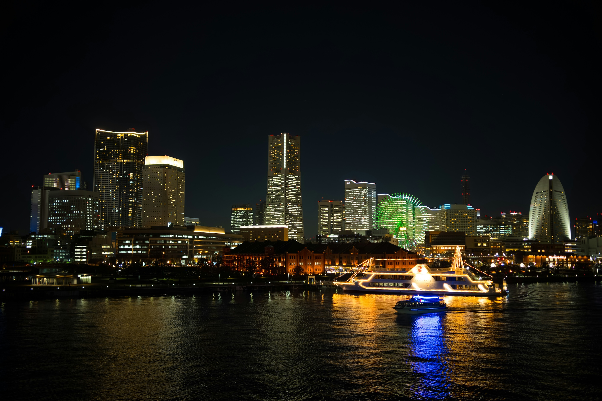
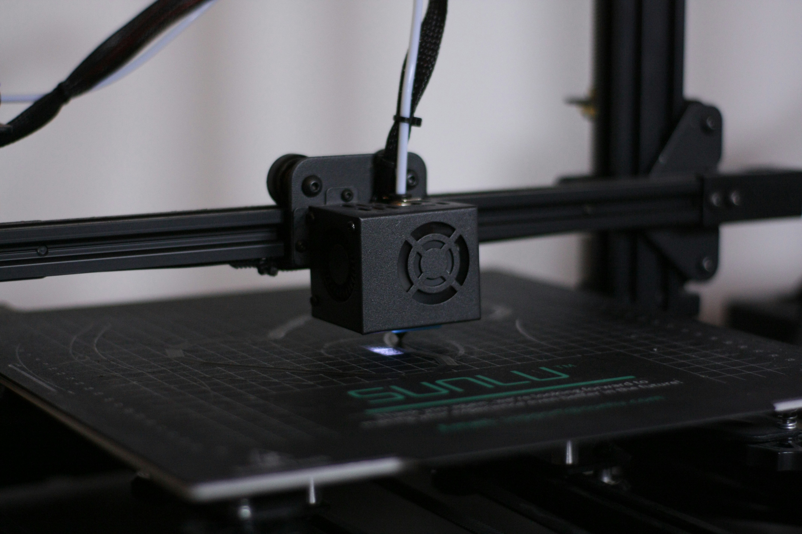

Project Note 2
横浜市の方の講演
今回は横浜市の方がゲストスピーカーとして来てくださり、「みなとみらい21地区における脱炭素とサーキュラーエコノミーの取り組み」についての講演をしてくださった。 また、廃棄されるクリアファイルの有効活用法についてのアイディアを以下にメモとしてまとめておく。
みなとみらい21地区における取り組み
グリーンな社会の実現を目指し、カーボンニュートラルの推進と循環型社会にむけた取り組みを進めていくとのことであった。 資源再利用により環境にも人にもやさしく、経済の活性化にもつながるサステナブルな循環型社会を市民とつくっていくとおっしゃっていた。 みなとみらいは2022年４月に脱炭素先行地域へと選定された。脱炭素先行地域とは国が認定する2030年度までに電力消費に伴うCO2排出の実質ゼロを実現する地域を指すのである。 脱炭素に向けた取り組みとしては、太陽光発電設備の設置や公道充電器、LEDや普及啓発などさまざまなものが行われている。

みなとみらい・サーキュラーシティプロジェクト
ヨコハマSDGsデザインセンター、脱炭素・GREEN EXPO推進局の連携により2023年3月に開始された。 脱炭素先行地域としての取り組みの一つとして、地区で働き、暮らし、学ぶ人々が共にサーキュラーエコノミーを推進するものである。 脱炭素を加速するとし型のサーキュラーエコノミーモデルの構築・発信に取り組むプロジェクトである。
ボトルtoボトル水平リサイクル
みなとみらい21地区で2025年1月より、ペットボトルのボトルtoボトルリサイクルを実施。 事業公募により、サントリーホールディングス株式会社をはじめとする企業グループと実施。 令和７年度に回収したペットボトルは約90トン、500ml換算で約450万本に相当する。

そのほかにもさまざまなユニークな活動を行っている。
横浜市×doyo lab
クリアファイル再生プロジェクト
単一素材のクリアファイルを回収し、再生ペレットへと変化させ何かに活用できないかというプロジェクトである。
再生プラ素材として経済的な利活用が成立するかを実証するのである。
「クリアファイルから次の価値を生み出す」
ということをテーマとし、3Dプリンタの活用やファイルそのもののアップサイクルなどさまざまな視点から可能性を広げていく。